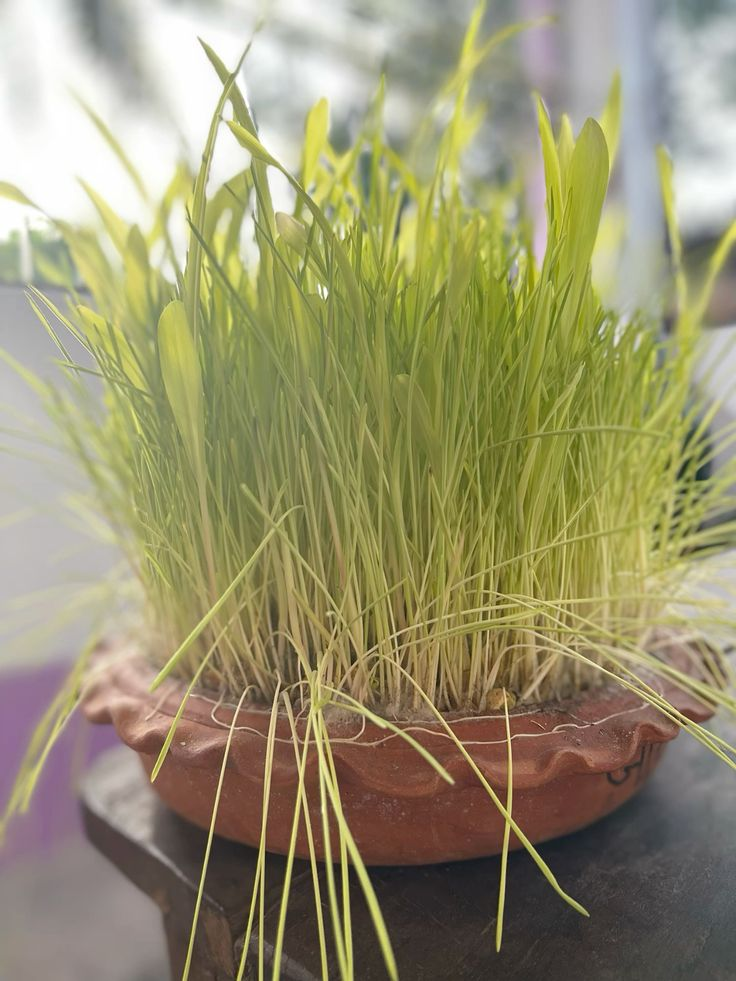

Day 1
Jamara begins in the dark
Ghatasthapana morning was freezing cold. We woke up before sunrise to bring clean river sand into the prayer room. Our parents soaked the barley seeds overnight, and I helped sprinkle them into the clay vessels before placing them strictly away from direct sunlight. For the next nine days, nobody was allowed to enter that room wearing shoes or with unwashed hands. Every morning I peeked through the door curtain to see if the pale yellow shoots had poked through the sand. There is something magical about how barley grown in total darkness turns into bright golden jamara.